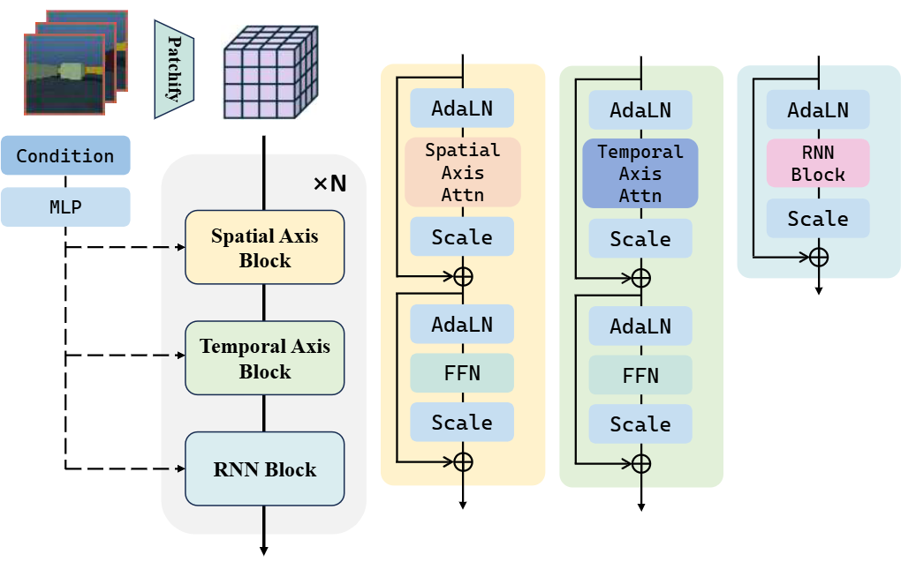
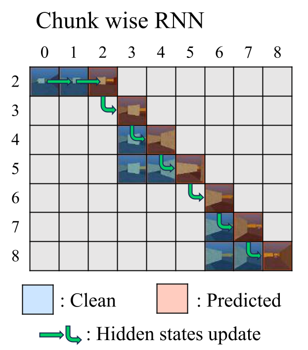
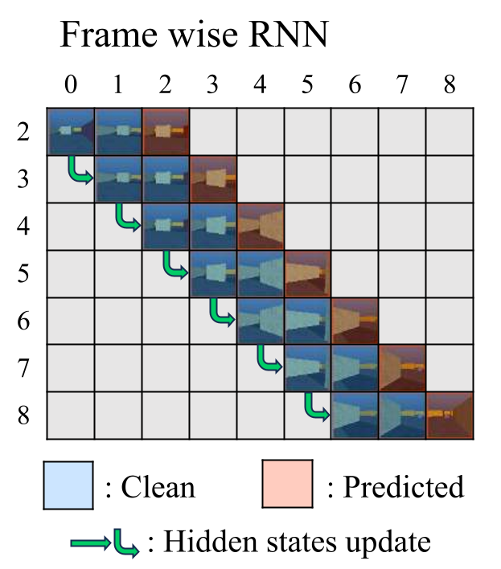
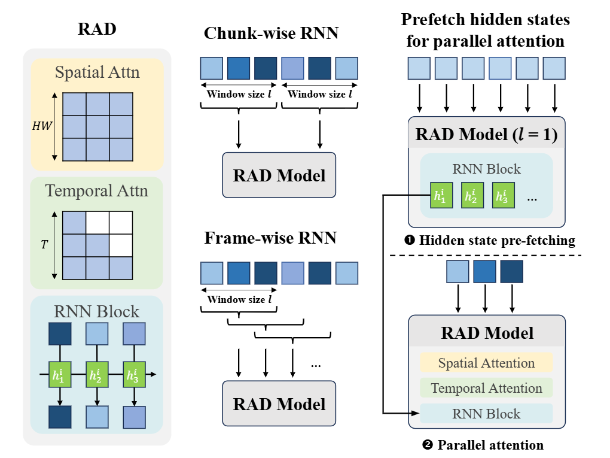
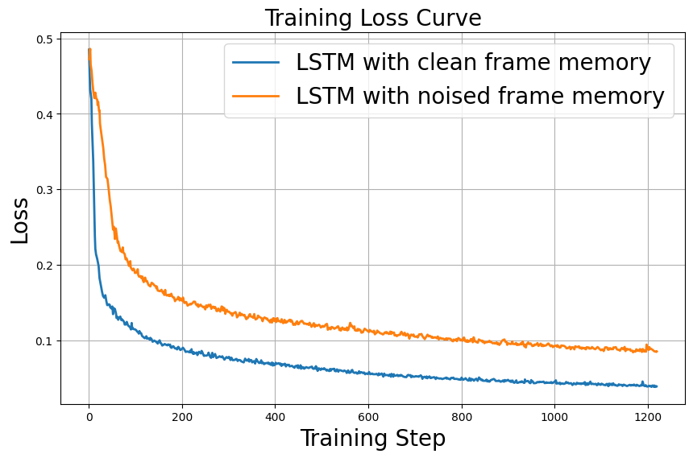

Recent advancements in video generation has shifted from bidirectional models for short videos to autoregressive ones for ultra long video generation. Previous models, which usually use sliding window attention to restrict inference cost, lack effective memory compression and retrieval for long-term generation beyond the window size, leading to issues of forgetting and spatiotemporal inconsistencies.
To enhance the retention of historical information with a fixed memory budget, we additionally incorporate temporal recurrent neural network (RNN) layers into the diffusion transformer (DiT) model. We propose a novel Recurrent Autoregressive Diffusion (RAD) framework, which leverages recurrent blocks for memory update and retrieval and preserves local details by full attention on overlapping sliding windows, with no training and inference gap.
Experiments on Memory Maze and Minecraft datasets demonstrate the superiority for long video generation by our framework with global memory and local attention. We systematically compare LSTM, Mamba2 and TTT inside RAD, and prove frame-wise overlapping sliding window achieves better spatiotemporal consistency than chunk-wise non-overlapping windows.
Propose RAD: insert a temporal RNN block after spatial/temporal attention in each DiT layer to build global long-term memory.
Frame-wise overlapping sliding window autoregression to maintain local pixel consistency, eliminating train-inference mismatch.
Hidden-state prefetch mechanism to recover parallel attention training, solving the RNN sequential training bottleneck.
Comprehensive comparison of LSTM / Mamba2 / TTT on long video world model benchmarks (Memory Maze, Minecraft).

Figure 2: RAD Model Architecture — Each DiT Block contains Spatial Attention, Temporal Attention, RNN Memory Block
RAD extends standard DiT by adding an independent temporal RNN block after spatial & temporal attention in every layer:



Figure 4: Prefetch vs Standard Sliding Window Training
Vanilla RNN blocks force sequential training and break attention parallelism. We precompute all RNN hidden states on clean frames in stage 1; stage 2 runs full parallel attention denoising with pre-fetched memory states.
| Module | FLOPs | Params | Chunk-wise Performance | Frame-wise Performance |
|---|---|---|---|---|
| LSTM | O(BHWL(dh+h²)) | 195M | Best | Strong |
| Mamba2 | O(BHWLdn) | 153M | Poor | Comparable |
| TTT-linear | O(BHWL(d²+C)) | 118M | Poor | Comparable |
LSTM separates short-term hidden output yₜ and long-term cell state Cₜ, which makes it superior when attention cannot cross chunk boundaries. With overlapping frame-wise windows, three RNN variants perform nearly identically.
Each result is shown as a matched generated/ground-truth pair. Compare the two panels in a row to inspect how the same sample evolves under chunk-wise and frame-wise autoregression.
| Model | RNN Type | PSNR | SSIM | LPIPS |
|---|---|---|---|---|
| DF | None | 14.73 | 0.32 | 0.51 |
| VRAG | None | 15.55 | 0.41 | 0.43 |
| RAD | LSTM-c | 15.64 | 0.43 | 0.47 |
| RAD | LSTM-f | 15.50 | 0.41 | 0.45 |
| Model | RNN Type | PSNR | SSIM | LPIPS |
|---|---|---|---|---|
| DF | None | 15.65 | 0.45 | 0.53 |
| VRAG | None | 16.11 | 0.49 | 0.50 |
| RAD | LSTM-c | 14.24 | 0.39 | 0.55 |
| RAD | LSTM-f | 16.59 | 0.46 | 0.46 |
| RNN Block | GPU Mem (GB) | Train Step Time (s) | Params (M) |
|---|---|---|---|
| LSTM | 10.0 | 3.7 | 195 |
| Mamba2 | 11.1 | 3.6 | 153 |
| TTT | 16.0 | 12.9 | 118 |
TTT has severe training speed overhead; LSTM achieves balanced memory and runtime cost despite larger parameter count. Prefetch stage overhead only accounts for ~17.5% total FLOPs.
| Memory Input | PSNR | SSIM | LPIPS |
|---|---|---|---|
| Noised Latent Frames | 14.70 | 0.38 | 0.52 |
| Clean Frames (Ours Prefetch) | 15.30 | 0.41 | 0.50 |

Feeding denoised noisy latents into RNN damages memory encoding; clean frame prefetch is critical for stable long-term memory.
| Mode | Window Stride | PSNR | SSIM | LPIPS |
|---|---|---|---|---|
| LSTM-c Full Chunk | 20 | 15.64 | 0.43 | 0.47 |
| Partial Overlap | 10 | 15.06 | 0.40 | 0.55 |
| LSTM-f Frame-wise | 1 | 15.50 | 0.41 | 0.45 |
Partially overlapping windows cannot reach performance of full frame-wise stride=1 sliding attention.
@misc{chen2025recurrentautoregressivediffusionglobal,
title={Recurrent Autoregressive Diffusion: Global Memory Meets Local Attention},
author={Taiye Chen and Zihan Ding and Anjian Li and Christina Zhang and Zeqi Xiao and Yisen Wang and Chi Jin},
year={2025},
eprint={2511.12940},
archivePrefix={arXiv},
primaryClass={cs.CV},
url={https://arxiv.org/abs/2511.12940},
}